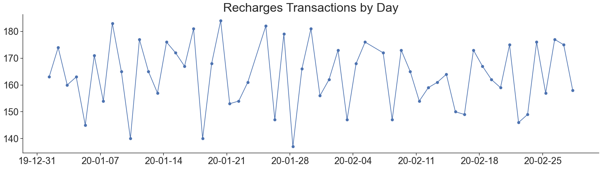
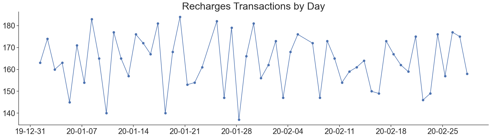

Featurizer#
from cider.datastore import DataStore
from cider.featurizer import Featurizer
Load some mobile phone metadata. See standardized data formats for file schemas.
# This path should point to your cider installation, where configs and data for this demo are located.
from pathlib import Path
cider_installation_directory = Path('../../cider')
datastore = DataStore(config_file_path_string= cider_installation_directory / 'configs' / 'config_quickstart.yml')
featurizer = Featurizer(datastore=datastore, clean_folders=True)
Setting default log level to "WARN".
To adjust logging level use sc.setLogLevel(newLevel). For SparkR, use setLogLevel(newLevel).
23/03/31 13:21:02 WARN NativeCodeLoader: Unable to load native-hadoop library for your platform... using builtin-java classes where applicable
Loading CDR...
Loading recharges...
SUCCESS!
Loading mobile data...
Loading mobile data...
Loading antennas...
Warning: 10 antennas missing location
Remove duplicate records, filter to just a specific date range, remove outlier days and spammers based on call and text volumes, and remove duplicate records in CDR, recharges, mobile data records, and mobile money records.
# Deduplication
featurizer.ds.deduplicate()
# Filter to just January 1 - February 28 (inclusive)
featurizer.ds.filter_dates('2020-01-01', '2020-02-28')
# Remove transactions involving spammers who place 1.8+ calls/texts per active day
spammers = featurizer.ds.remove_spammers(spammer_threshold=1.8)
Number of spammers identified: 19
# Remove all records from days more than 2 standard deviations from the mean transaction volume
outlier_days = featurizer.ds.filter_outlier_days(num_sds=2)
Outliers removed: 2020-01-24, 2020-02-06
/Users/leo/Documents/gpl/cider/cider/datastore.py:435: FutureWarning: The default value of numeric_only in DataFrameGroupBy.sum is deprecated. In a future version, numeric_only will default to False. Either specify numeric_only or select only columns which should be valid for the function.
timeseries = timeseries.groupby('day', as_index=False).agg('sum')
Produce summary statistics and plots.
print(featurizer.diagnostic_statistics())
{'CDR': {'Days': 59, 'Transactions': 91299, 'Subscribers': 981, 'Recipients': 981}, 'Recharges': {'Days': 59, 'Transactions': 9315, 'Subscribers': 783}, 'Mobile Data': {'Days': 59, 'Transactions': 9388, 'Subscribers': 592}, 'Mobile Money': {'Days': 59, 'Transactions': 5371, 'Subscribers': 682, 'Recipients': 682}}
featurizer.diagnostic_plots()

 



Featurize the data
featurizer.cdr_features_spark()
featurizer.international_features()
featurizer.location_features()
featurizer.recharges_features()
featurizer.mobiledata_features()
featurizer.mobilemoney_features()
featurizer.all_features()
Now we read the features back with pandas in to see what the table looks like. This works fine because our synthetic dataset is small, but such files can be too large to fit in memory if the number of subscribers is large; Cider uses pyspark to manage large datasets. Another option for working with large datasets is dask.
import pandas as pd
path_to_all_features = datastore.cfg.path.working.directory_path / 'featurizer' / 'datasets' / 'features.csv'
pd.read_csv(path_to_all_features).head()
| name | active_days_allweek_allday | active_days_allweek_day | active_days_allweek_night | active_days_weekday_allday | active_days_weekday_day | active_days_weekday_night | active_days_weekend_allday | active_days_weekend_day | active_days_weekend_night | ... | mobilemoney_outgoing_p2p_amount_min | mobilemoney_outgoing_p2p_amount_max | mobilemoney_outgoing_p2p_balance_before_mean | mobilemoney_outgoing_p2p_balance_before_min | mobilemoney_outgoing_p2p_balance_before_max | mobilemoney_outgoing_p2p_balance_after_mean | mobilemoney_outgoing_p2p_balance_after_min | mobilemoney_outgoing_p2p_balance_after_max | mobilemoney_outgoing_p2p_txns | mobilemoney_outgoing_p2p_contacts | |
|---|---|---|---|---|---|---|---|---|---|---|---|---|---|---|---|---|---|---|---|---|---|
| 0 | AASxnSdfla | 56 | 46 | 50 | 40 | 31 | 35 | 16 | 15 | 15 | ... | 31.799332 | 58.921886 | 187.554639 | 138.324660 | 228.47707 | 138.780946 | 106.525330 | 180.20863 | 6.0 | 6.0 |
| 1 | ANnpaBqoKb | 55 | 45 | 47 | 40 | 36 | 33 | 15 | 9 | 14 | ... | 37.976850 | 57.337646 | 182.190155 | 158.963560 | 223.29039 | 137.548449 | 106.978870 | 185.31354 | 3.0 | 3.0 |
| 2 | AWrbWzWkYp | 55 | 45 | 46 | 39 | 32 | 33 | 16 | 13 | 13 | ... | 53.090126 | 58.511192 | 202.108686 | 108.117546 | 272.34055 | 146.345222 | 52.118343 | 219.25041 | 4.0 | 4.0 |
| 3 | AaJProAtlR | 56 | 48 | 48 | 41 | 36 | 34 | 15 | 12 | 14 | ... | 32.858997 | 68.323395 | 235.638050 | 194.502760 | 287.86615 | 188.334709 | 143.178710 | 242.73692 | 4.0 | 4.0 |
| 4 | ApDvhzOUJr | 56 | 39 | 51 | 40 | 28 | 36 | 16 | 11 | 15 | ... | 44.307076 | 52.375270 | 192.653709 | 185.676930 | 199.63050 | 144.312531 | 133.301650 | 155.32341 | 2.0 | 2.0 |
5 rows × 1122 columns
Plot the distributions of some of the features.
featurizer.feature_plots()


---------------------------------------------------------------------------
AnalysisException Traceback (most recent call last)
Cell In[51], line 1
----> 1 featurizer.feature_plots()
File ~/Documents/gpl/cider/cider/featurizer.py:739, in Featurizer.feature_plots(self, read_from_disk)
737 if subscribers is not None:
738 users = self.features['cdr'].join(subscribers, how='inner', on='name')
--> 739 slice = users.select(['name', features[a]]).toPandas()
740 slice['slice_name'] = slice_name
741 boxplot.append(slice)
File ~/miniconda3/envs/cider/lib/python3.8/site-packages/pyspark/sql/dataframe.py:2023, in DataFrame.select(self, *cols)
2002 def select(self, *cols: "ColumnOrName") -> "DataFrame": # type: ignore[misc]
2003 """Projects a set of expressions and returns a new :class:`DataFrame`.
2004
2005 .. versionadded:: 1.3.0
(...)
2021 [Row(name='Alice', age=12), Row(name='Bob', age=15)]
2022 """
-> 2023 jdf = self._jdf.select(self._jcols(*cols))
2024 return DataFrame(jdf, self.sparkSession)
File ~/miniconda3/envs/cider/lib/python3.8/site-packages/py4j/java_gateway.py:1321, in JavaMember.__call__(self, *args)
1315 command = proto.CALL_COMMAND_NAME +\
1316 self.command_header +\
1317 args_command +\
1318 proto.END_COMMAND_PART
1320 answer = self.gateway_client.send_command(command)
-> 1321 return_value = get_return_value(
1322 answer, self.gateway_client, self.target_id, self.name)
1324 for temp_arg in temp_args:
1325 temp_arg._detach()
File ~/miniconda3/envs/cider/lib/python3.8/site-packages/pyspark/sql/utils.py:196, in capture_sql_exception.<locals>.deco(*a, **kw)
192 converted = convert_exception(e.java_exception)
193 if not isinstance(converted, UnknownException):
194 # Hide where the exception came from that shows a non-Pythonic
195 # JVM exception message.
--> 196 raise converted from None
197 else:
198 raise
AnalysisException: Column 'cdr_active_days__allweek__day__callandtext' does not exist. Did you mean one of the following? [active_days_allweek_allday, active_days_weekday_allday, active_days_allweek_day, active_days_allweek_night, active_days_weekday_night, active_days_weekend_allday, active_days_weekday_day, active_days_weekend_night, call_duration_allweek_day_call_max, call_duration_allweek_day_call_mean, call_duration_allweek_day_call_std, active_days_weekend_day, call_duration_allweek_day_call_median, call_duration_allweek_day_call_min, interevent_time_allweek_day_call_max, interevent_time_allweek_day_call_mean, interevent_time_allweek_day_call_std, balance_of_contacts_allweek_day_call_max, balance_of_contacts_allweek_day_call_mean, balance_of_contacts_allweek_day_call_std, call_duration_allweek_allday_call_max, call_duration_allweek_allday_call_mean, call_duration_allweek_allday_call_std, call_duration_allweek_day_call_kurtosis, call_duration_allweek_day_call_skewness, interevent_time_allweek_day_call_median, interevent_time_allweek_day_call_min, balance_of_contacts_allweek_day_call_median, balance_of_contacts_allweek_day_call_min, call_duration_allweek_allday_call_median, call_duration_allweek_allday_call_min, call_duration_allweek_night_call_max, call_duration_allweek_night_call_mean, call_duration_allweek_night_call_std, interevent_time_allweek_allday_call_max, interevent_time_allweek_allday_call_mean, interevent_time_allweek_allday_call_std, interevent_time_allweek_day_call_kurtosis, interevent_time_allweek_day_call_skewness, number_of_contacts_allweek_day_call, number_of_contacts_allweek_day_text, balance_of_contacts_allweek_allday_call_max, balance_of_contacts_allweek_allday_call_mean, balance_of_contacts_allweek_allday_call_std, balance_of_contacts_allweek_day_call_kurtosis, balance_of_contacts_allweek_day_call_skewness, call_duration_allweek_allday_call_kurtosis, call_duration_allweek_allday_call_skewness, call_duration_allweek_night_call_median, call_duration_allweek_night_call_min, call_duration_weekday_day_call_max, call_duration_weekday_day_call_mean, call_duration_weekday_day_call_std, call_duration_weekend_day_call_max, call_duration_weekend_day_call_mean, call_duration_weekend_day_call_std, entropy_of_contacts_allweek_day_call, entropy_of_contacts_allweek_day_text, entropy_of_contacts_weekday_allday_text, interactions_per_contact_allweek_day_call_max, interactions_per_contact_allweek_day_call_mean, interactions_per_contact_allweek_day_call_std, interevent_time_allweek_allday_call_median, interevent_time_allweek_allday_call_min, interevent_time_allweek_night_call_max, interevent_time_allweek_night_call_mean, interevent_time_allweek_night_call_std, number_of_contacts_allweek_allday_text, number_of_contacts_weekday_allday_text, percent_at_home_allweek_allday, percent_at_home_weekday_allday, percent_nocturnal_weekday_call, percent_nocturnal_weekday_text, response_delay_text_allweek_day_max, response_delay_text_allweek_day_mean, response_delay_text_allweek_day_median, response_delay_text_allweek_day_skewness, response_delay_text_weekday_allday_max, response_delay_text_weekday_allday_mean, response_rate_text_weekday_allday, balance_of_contacts_allweek_allday_call_median, balance_of_contacts_allweek_allday_call_min, balance_of_contacts_allweek_night_call_max, balance_of_contacts_allweek_night_call_mean, balance_of_contacts_allweek_night_call_std, call_duration_allweek_night_call_kurtosis, call_duration_allweek_night_call_skewness, call_duration_weekday_day_call_median, call_duration_weekday_day_call_min, call_duration_weekend_day_call_median, call_duration_weekend_day_call_min, entropy_of_contacts_allweek_allday_text, frequent_antennas_weekday_allday, interactions_per_contact_allweek_day_call_median, interactions_per_contact_allweek_day_call_min, interevent_time_allweek_allday_call_kurtosis, interevent_time_allweek_allday_call_skewness, interevent_time_allweek_day_text_max, interevent_time_allweek_day_text_mean, interevent_time_allweek_day_text_median, interevent_time_allweek_day_text_std, interevent_time_allweek_night_call_median, interevent_time_allweek_night_call_min, number_of_contacts_allweek_allday_call, percent_at_home_allweek_day, response_delay_text_allweek_day_min, response_delay_text_allweek_day_std, response_delay_text_weekday_allday_min, response_delay_text_weekday_allday_std, balance_of_contacts_allweek_allday_call_kurtosis, balance_of_contacts_allweek_allday_call_skewness, balance_of_contacts_allweek_day_text_max, balance_of_contacts_allweek_day_text_mean, balance_of_contacts_allweek_day_text_median, balance_of_contacts_allweek_day_text_std, balance_of_contacts_allweek_night_call_median, balance_of_contacts_allweek_night_call_min, balance_of_contacts_weekday_day_call_max, balance_of_contacts_weekday_day_call_mean, balance_of_contacts_weekday_day_call_std, balance_of_contacts_weekend_day_call_max, balance_of_contacts_weekend_day_call_mean, balance_of_contacts_weekend_day_call_std, call_duration_weekday_allday_call_max, call_duration_weekday_allday_call_mean, call_duration_weekday_allday_call_std, call_duration_weekday_day_call_kurtosis, call_duration_weekday_day_call_skewness, call_duration_weekend_day_call_kurtosis, call_duration_weekend_day_call_skewness, entropy_of_antennas_weekday_allday, entropy_of_contacts_allweek_allday_call, entropy_of_contacts_weekday_day_text, entropy_of_contacts_weekend_allday_text, frequent_antennas_allweek_allday, interactions_per_contact_allweek_allday_call_max, interactions_per_contact_allweek_allday_call_mean, interactions_per_contact_allweek_allday_call_std, interactions_per_contact_allweek_day_call_kurtosis, interactions_per_contact_allweek_day_call_skewness, interevent_time_allweek_day_text_kurtosis, interevent_time_allweek_day_text_min, interevent_time_allweek_day_text_skewness, interevent_time_allweek_night_call_kurtosis, interevent_time_allweek_night_call_skewness, interevent_time_weekday_day_call_max, interevent_time_weekday_day_call_mean, interevent_time_weekday_day_call_std, interevent_time_weekend_day_call_max, interevent_time_weekend_day_call_mean, interevent_time_weekend_day_call_std, number_of_antennas_allweek_allday, number_of_antennas_weekday_allday, number_of_contacts_allweek_night_call, number_of_contacts_allweek_night_text, number_of_contacts_weekday_day_text, number_of_contacts_weekend_allday_text, number_of_interactions_in_allweek_day_call, number_of_interactions_in_allweek_day_text, number_of_interactions_in_weekday_allday_text, number_of_interactions_out_weekday_allday_text, percent_at_home_allweek_night, percent_at_home_weekday_night, percent_at_home_weekend_allday, percent_nocturnal_allweek_call, percent_nocturnal_allweek_text, percent_nocturnal_weekend_call, percent_nocturnal_weekend_text, radius_of_gyration_weekday_allday, response_delay_text_allweek_allday_max, response_delay_text_allweek_allday_mean, response_delay_text_allweek_allday_median, response_delay_text_allweek_allday_skewness, response_delay_text_allweek_day_kurtosis, response_delay_text_weekday_allday_median, response_delay_text_weekday_day_max, response_delay_text_weekday_day_mean, response_delay_text_weekday_day_median, response_delay_text_weekday_day_std, response_delay_text_weekend_allday_max, response_delay_text_weekend_allday_mean, response_rate_text_allweek_allday, response_rate_text_weekday_night, response_rate_text_weekend_allday, balance_of_contacts_allweek_day_text_kurtosis, balance_of_contacts_allweek_day_text_min, balance_of_contacts_allweek_day_text_skewness, balance_of_contacts_allweek_night_call_kurtosis, balance_of_contacts_allweek_night_call_skewness, balance_of_contacts_weekday_allday_text_max, balance_of_contacts_weekday_allday_text_min, balance_of_contacts_weekday_allday_text_std, balance_of_contacts_weekday_day_call_median, balance_of_contacts_weekday_day_call_min, balance_of_contacts_weekend_day_call_median, balance_of_contacts_weekend_day_call_min, call_duration_weekday_allday_call_median, call_duration_weekday_allday_call_min, call_duration_weekday_night_call_max, call_duration_weekday_night_call_mean, call_duration_weekday_night_call_std, call_duration_weekend_allday_call_max, call_duration_weekend_allday_call_mean, call_duration_weekend_allday_call_std, entropy_of_antennas_allweek_allday, entropy_of_contacts_allweek_night_call, entropy_of_contacts_allweek_night_text, entropy_of_contacts_weekday_night_text, frequent_antennas_allweek_day, frequent_antennas_weekday_night, frequent_antennas_weekend_allday, interactions_per_contact_allweek_allday_call_median, interactions_per_contact_allweek_allday_call_min, interactions_per_contact_allweek_night_call_max, interactions_per_contact_allweek_night_call_mean, interactions_per_contact_allweek_night_call_std, interactions_per_contact_weekday_day_call_max, interactions_per_contact_weekday_day_call_mean, interactions_per_contact_weekday_day_call_std, interactions_per_contact_weekend_day_call_max, interactions_per_contact_weekend_day_call_mean, interactions_per_contact_weekend_day_call_std, interevent_time_allweek_allday_text_max, interevent_time_allweek_allday_text_mean, interevent_time_allweek_allday_text_median, interevent_time_allweek_allday_text_min, interevent_time_allweek_allday_text_std, interevent_time_weekday_allday_text_max, interevent_time_weekday_allday_text_min, interevent_time_weekday_allday_text_std, interevent_time_weekday_day_call_median, interevent_time_weekday_day_call_min, interevent_time_weekend_day_call_median, interevent_time_weekend_day_call_min, number_of_antennas_allweek_day, number_of_contacts_weekday_night_text, number_of_interactions_alldir_weekday_allday_text, number_of_interactions_in_allweek_allday_text, number_of_interactions_out_allweek_day_call, number_of_interactions_out_allweek_day_text, percent_at_home_weekday_day, percent_pareto_interactions_weekday_allday_text, radius_of_gyration_allweek_allday, response_delay_text_allweek_allday_min, response_delay_text_allweek_allday_std, response_delay_text_allweek_night_max, response_delay_text_allweek_night_mean, response_delay_text_allweek_night_median, response_delay_text_allweek_night_skewness, response_delay_text_weekday_day_kurtosis, response_delay_text_weekday_day_min, response_delay_text_weekday_day_skewness, response_delay_text_weekday_night_max, response_delay_text_weekday_night_mean, response_delay_text_weekday_night_std, response_delay_text_weekend_allday_min, response_delay_text_weekend_allday_std, response_delay_text_weekend_day_max, response_delay_text_weekend_day_mean, response_delay_text_weekend_day_median, response_delay_text_weekend_day_skewness, response_rate_text_allweek_day, response_rate_text_weekday_day, balance_of_contacts_allweek_allday_text_max, balance_of_contacts_allweek_allday_text_mean, balance_of_contacts_allweek_allday_text_median, balance_of_contacts_allweek_allday_text_min, balance_of_contacts_allweek_allday_text_std, balance_of_contacts_weekday_allday_text_mean, balance_of_contacts_weekday_day_call_kurtosis, balance_of_contacts_weekday_day_call_skewness, balance_of_contacts_weekday_day_text_std, balance_of_contacts_weekend_day_call_kurtosis, balance_of_contacts_weekend_day_call_skewness, call_duration_weekday_allday_call_kurtosis, call_duration_weekday_allday_call_skewness, call_duration_weekday_night_call_median, call_duration_weekday_night_call_min, call_duration_weekend_allday_call_median, call_duration_weekend_allday_call_min, call_duration_weekend_night_call_max, call_duration_weekend_night_call_mean, call_duration_weekend_night_call_std, entropy_of_antennas_allweek_day, entropy_of_antennas_weekday_night, entropy_of_antennas_weekend_allday, entropy_of_contacts_weekday_allday_call, entropy_of_contacts_weekday_day_call, entropy_of_contacts_weekend_day_call, entropy_of_contacts_weekend_day_text, frequent_antennas_allweek_night, frequent_antennas_weekday_day, interactions_per_contact_allweek_allday_call_kurtosis, interactions_per_contact_allweek_allday_call_skewness, interactions_per_contact_allweek_day_text_max, interactions_per_contact_allweek_day_text_mean, interactions_per_contact_allweek_day_text_median, interactions_per_contact_allweek_day_text_std, interactions_per_contact_allweek_night_call_median, interactions_per_contact_allweek_night_call_min, interactions_per_contact_weekday_allday_text_max, interactions_per_contact_weekday_allday_text_min, interactions_per_contact_weekday_allday_text_std, interactions_per_contact_weekday_day_call_median, interactions_per_contact_weekday_day_call_min, interactions_per_contact_weekend_day_call_median, interactions_per_contact_weekend_day_call_min, interevent_time_allweek_allday_text_kurtosis, interevent_time_allweek_allday_text_skewness, interevent_time_allweek_night_text_max, interevent_time_allweek_night_text_mean, interevent_time_allweek_night_text_std, interevent_time_weekday_allday_call_max, interevent_time_weekday_allday_call_mean, interevent_time_weekday_allday_call_std, interevent_time_weekday_allday_text_mean, interevent_time_weekday_day_call_kurtosis, interevent_time_weekday_day_call_skewness, interevent_time_weekday_day_text_std, interevent_time_weekend_day_call_kurtosis, interevent_time_weekend_day_call_skewness, number_of_antennas_allweek_night, number_of_antennas_weekday_night, number_of_antennas_weekend_allday, number_of_contacts_weekday_allday_call, number_of_contacts_weekday_day_call, number_of_contacts_weekend_day_call, number_of_contacts_weekend_day_text, number_of_interactions_in_allweek_allday_call, number_of_interactions_in_weekday_day_text, number_of_interactions_in_weekend_allday_text, number_of_interactions_out_allweek_allday_text, number_of_interactions_out_weekday_day_text, number_of_interactions_out_weekend_allday_text, percent_at_home_weekend_night, percent_pareto_durations_weekday_allday, percent_pareto_interactions_allweek_day_call, percent_pareto_interactions_allweek_day_text, radius_of_gyration_allweek_day, radius_of_gyration_weekday_night, radius_of_gyration_weekend_allday, response_delay_text_allweek_allday_kurtosis, response_delay_text_allweek_night_min, response_delay_text_allweek_night_std, response_delay_text_weekday_allday_kurtosis, response_delay_text_weekday_allday_skewness, response_delay_text_weekday_night_median, response_delay_text_weekday_night_min, response_delay_text_weekend_allday_median, response_delay_text_weekend_day_min, response_delay_text_weekend_day_std, response_rate_text_allweek_night, response_rate_text_weekend_night, balance_of_contacts_allweek_allday_text_kurtosis, balance_of_contacts_allweek_allday_text_skewness, balance_of_contacts_allweek_night_text_max, balance_of_contacts_allweek_night_text_mean, balance_of_contacts_allweek_night_text_std, balance_of_contacts_weekday_allday_call_max, balance_of_contacts_weekday_allday_call_mean, balance_of_contacts_weekday_allday_call_std, balance_of_contacts_weekday_day_text_max, balance_of_contacts_weekday_day_text_mean, balance_of_contacts_weekday_day_text_min, balance_of_contacts_weekday_night_call_max, balance_of_contacts_weekday_night_call_mean, balance_of_contacts_weekday_night_call_std, balance_of_contacts_weekend_allday_call_max, balance_of_contacts_weekend_allday_call_mean, balance_of_contacts_weekend_allday_call_std, balance_of_contacts_weekend_allday_text_max, balance_of_contacts_weekend_allday_text_min, balance_of_contacts_weekend_allday_text_std, call_duration_weekday_night_call_kurtosis, call_duration_weekday_night_call_skewness, call_duration_weekend_allday_call_kurtosis, call_duration_weekend_allday_call_skewness, call_duration_weekend_night_call_median, call_duration_weekend_night_call_min, entropy_of_antennas_allweek_night, entropy_of_antennas_weekday_day, entropy_of_contacts_weekend_night_text, frequent_antennas_weekend_night, interactions_per_contact_allweek_day_text_kurtosis, interactions_per_contact_allweek_day_text_min, interactions_per_contact_allweek_day_text_skewness, interactions_per_contact_allweek_night_call_kurtosis, interactions_per_contact_allweek_night_call_skewness, interactions_per_contact_weekday_allday_text_mean, interactions_per_contact_weekday_day_call_kurtosis, interactions_per_contact_weekday_day_call_skewness, interactions_per_contact_weekday_day_text_std, interactions_per_contact_weekend_day_call_kurtosis, interactions_per_contact_weekend_day_call_skewness, interevent_time_allweek_night_text_median, interevent_time_allweek_night_text_min, interevent_time_weekday_allday_call_median, interevent_time_weekday_allday_call_min, interevent_time_weekday_day_text_max, interevent_time_weekday_day_text_mean, interevent_time_weekday_day_text_min, interevent_time_weekday_night_call_max, interevent_time_weekday_night_call_mean, interevent_time_weekday_night_call_std, interevent_time_weekend_allday_call_max, interevent_time_weekend_allday_call_mean, interevent_time_weekend_allday_call_std, interevent_time_weekend_allday_text_max, interevent_time_weekend_allday_text_min, interevent_time_weekend_allday_text_std, number_of_antennas_weekday_day, number_of_contacts_weekend_night_text, number_of_interactions_alldir_allweek_day_call, number_of_interactions_alldir_allweek_day_text, number_of_interactions_alldir_weekday_day_text, number_of_interactions_alldir_weekend_allday_text, number_of_interactions_in_allweek_night_call, number_of_interactions_in_allweek_night_text, number_of_interactions_in_weekday_night_text, number_of_interactions_out_allweek_allday_call, number_of_interactions_out_weekday_night_text, percent_at_home_weekend_day, percent_pareto_durations_allweek_allday, percent_pareto_interactions_allweek_allday_text, percent_pareto_interactions_weekday_day_text, percent_pareto_interactions_weekend_allday_text, radius_of_gyration_allweek_night, radius_of_gyration_weekday_day, response_delay_text_allweek_night_kurtosis, response_delay_text_weekday_night_kurtosis, response_delay_text_weekday_night_skewness, response_delay_text_weekend_day_kurtosis, response_delay_text_weekend_night_max, response_delay_text_weekend_night_mean, response_delay_text_weekend_night_std, response_rate_text_weekend_day, balance_of_contacts_allweek_night_text_median, balance_of_contacts_allweek_night_text_min, balance_of_contacts_weekday_allday_call_median, balance_of_contacts_weekday_allday_call_min, balance_of_contacts_weekday_allday_text_median, balance_of_contacts_weekday_day_text_median, balance_of_contacts_weekday_night_call_median, balance_of_contacts_weekday_night_call_min, balance_of_contacts_weekday_night_text_max, balance_of_contacts_weekday_night_text_min, balance_of_contacts_weekday_night_text_std, balance_of_contacts_weekend_allday_call_median, balance_of_contacts_weekend_allday_call_min, balance_of_contacts_weekend_allday_text_mean, balance_of_contacts_weekend_day_text_max, balance_of_contacts_weekend_day_text_mean, balance_of_contacts_weekend_day_text_median, balance_of_contacts_weekend_day_text_std, balance_of_contacts_weekend_night_call_max, balance_of_contacts_weekend_night_call_mean, balance_of_contacts_weekend_night_call_std, call_duration_weekend_night_call_kurtosis, call_duration_weekend_night_call_skewness, entropy_of_antennas_weekend_night, entropy_of_contacts_weekend_allday_call, frequent_antennas_weekend_day, interactions_per_contact_allweek_allday_text_max, interactions_per_contact_allweek_allday_text_mean, interactions_per_contact_allweek_allday_text_median, interactions_per_contact_allweek_allday_text_min, interactions_per_contact_allweek_allday_text_std, interactions_per_contact_weekday_allday_call_max, interactions_per_contact_weekday_allday_call_mean, interactions_per_contact_weekday_allday_call_std, interactions_per_contact_weekday_day_text_max, interactions_per_contact_weekday_day_text_mean, interactions_per_contact_weekday_day_text_min, interactions_per_contact_weekday_night_call_max, interactions_per_contact_weekday_night_call_mean, interactions_per_contact_weekday_night_call_std, interactions_per_contact_weekend_allday_call_max, interactions_per_contact_weekend_allday_call_mean, interactions_per_contact_weekend_allday_call_std, interactions_per_contact_weekend_allday_text_max, interactions_per_contact_weekend_allday_text_min, interactions_per_contact_weekend_allday_text_std, interevent_time_allweek_night_text_kurtosis, interevent_time_allweek_night_text_skewness, interevent_time_weekday_allday_call_kurtosis, interevent_time_weekday_allday_call_skewness, interevent_time_weekday_allday_text_median, interevent_time_weekday_day_text_median, interevent_time_weekday_night_call_median, interevent_time_weekday_night_call_min, interevent_time_weekday_night_text_max, interevent_time_weekday_night_text_min, interevent_time_weekday_night_text_std, interevent_time_weekend_allday_call_median, interevent_time_weekend_allday_call_min, interevent_time_weekend_allday_text_mean, interevent_time_weekend_day_text_max, interevent_time_weekend_day_text_mean, interevent_time_weekend_day_text_median, interevent_time_weekend_day_text_std, interevent_time_weekend_night_call_max, interevent_time_weekend_night_call_mean, interevent_time_weekend_night_call_std, number_of_antennas_weekend_night, number_of_contacts_weekend_allday_call, number_of_interactions_alldir_allweek_allday_text, number_of_interactions_alldir_weekday_night_text, number_of_interactions_in_weekday_allday_call, number_of_interactions_in_weekday_day_call, number_of_interactions_in_weekend_day_call, number_of_interactions_in_weekend_day_text, number_of_interactions_out_allweek_night_call, number_of_interactions_out_allweek_night_text, number_of_interactions_out_weekday_allday_call, number_of_interactions_out_weekday_day_call, number_of_interactions_out_weekend_day_call, number_of_interactions_out_weekend_day_text, percent_pareto_durations_allweek_day, percent_pareto_durations_weekday_night, percent_pareto_durations_weekend_allday, percent_pareto_interactions_allweek_allday_call, percent_pareto_interactions_weekday_night_text, radius_of_gyration_weekend_night, response_delay_text_weekend_allday_kurtosis, response_delay_text_weekend_allday_skewness, response_delay_text_weekend_night_median, response_delay_text_weekend_night_min, response_delay_text_weekend_night_skewness, balance_of_contacts_allweek_night_text_kurtosis, balance_of_contacts_allweek_night_text_skewness, balance_of_contacts_weekday_allday_call_kurtosis, balance_of_contacts_weekday_allday_call_skewness, balance_of_contacts_weekday_day_text_kurtosis, balance_of_contacts_weekday_day_text_skewness, balance_of_contacts_weekday_night_call_kurtosis, balance_of_contacts_weekday_night_call_skewness, balance_of_contacts_weekday_night_text_mean, balance_of_contacts_weekend_allday_call_kurtosis, balance_of_contacts_weekend_allday_call_skewness, balance_of_contacts_weekend_day_text_kurtosis, balance_of_contacts_weekend_day_text_min, balance_of_contacts_weekend_day_text_skewness, balance_of_contacts_weekend_night_call_median, balance_of_contacts_weekend_night_call_min, entropy_of_antennas_weekend_day, entropy_of_contacts_weekday_night_call, interactions_per_contact_allweek_allday_text_kurtosis, interactions_per_contact_allweek_allday_text_skewness, interactions_per_contact_allweek_night_text_max, interactions_per_contact_allweek_night_text_mean, interactions_per_contact_allweek_night_text_std, interactions_per_contact_weekday_allday_call_median, interactions_per_contact_weekday_allday_call_min, interactions_per_contact_weekday_allday_text_median, interactions_per_contact_weekday_day_text_median, interactions_per_contact_weekday_night_call_median, interactions_per_contact_weekday_night_call_min, interactions_per_contact_weekday_night_text_max, interactions_per_contact_weekday_night_text_min, interactions_per_contact_weekday_night_text_std, interactions_per_contact_weekend_allday_call_median, interactions_per_contact_weekend_allday_call_min, interactions_per_contact_weekend_allday_text_mean, interactions_per_contact_weekend_day_text_max, interactions_per_contact_weekend_day_text_mean, interactions_per_contact_weekend_day_text_median, interactions_per_contact_weekend_day_text_std, interactions_per_contact_weekend_night_call_max, interactions_per_contact_weekend_night_call_mean, interactions_per_contact_weekend_night_call_std, interevent_time_weekday_day_text_kurtosis, interevent_time_weekday_day_text_skewness, interevent_time_weekday_night_call_kurtosis, interevent_time_weekday_night_call_skewness, interevent_time_weekday_night_text_mean, interevent_time_weekend_allday_call_kurtosis, interevent_time_weekend_allday_call_skewness, interevent_time_weekend_day_text_kurtosis, interevent_time_weekend_day_text_min, interevent_time_weekend_day_text_skewness, interevent_time_weekend_night_call_median, interevent_time_weekend_night_call_min, number_of_antennas_weekend_day, number_of_contacts_weekday_night_call, number_of_interactions_alldir_allweek_allday_call, number_of_interactions_alldir_weekday_allday_call, number_of_interactions_alldir_weekday_day_call, number_of_interactions_alldir_weekend_day_call, number_of_interactions_alldir_weekend_day_text, number_of_interactions_in_weekend_night_text, number_of_interactions_out_weekend_night_text, percent_pareto_durations_allweek_night, percent_pareto_durations_weekday_day, percent_pareto_interactions_allweek_night_call, percent_pareto_interactions_allweek_night_text, percent_pareto_interactions_weekday_allday_call, percent_pareto_interactions_weekday_day_call, percent_pareto_interactions_weekend_day_call, percent_pareto_interactions_weekend_day_text, radius_of_gyration_weekend_day, response_delay_text_weekend_night_kurtosis, balance_of_contacts_weekday_allday_text_kurtosis, balance_of_contacts_weekday_allday_text_skewness, balance_of_contacts_weekend_allday_text_median, balance_of_contacts_weekend_night_call_kurtosis, balance_of_contacts_weekend_night_call_skewness, balance_of_contacts_weekend_night_text_max, balance_of_contacts_weekend_night_text_min, balance_of_contacts_weekend_night_text_std, entropy_of_contacts_weekend_night_call, interactions_per_contact_allweek_night_text_median, interactions_per_contact_allweek_night_text_min, interactions_per_contact_weekday_allday_call_kurtosis, interactions_per_contact_weekday_allday_call_skewness, interactions_per_contact_weekday_day_text_kurtosis, interactions_per_contact_weekday_day_text_skewness, interactions_per_contact_weekday_night_call_kurtosis, interactions_per_contact_weekday_night_call_skewness, interactions_per_contact_weekday_night_text_mean, interactions_per_contact_weekend_allday_call_kurtosis, interactions_per_contact_weekend_allday_call_skewness, interactions_per_contact_weekend_day_text_kurtosis, interactions_per_contact_weekend_day_text_min, interactions_per_contact_weekend_day_text_skewness, interactions_per_contact_weekend_night_call_median, interactions_per_contact_weekend_night_call_min, interevent_time_weekday_allday_text_kurtosis, interevent_time_weekday_allday_text_skewness, interevent_time_weekend_allday_text_median, interevent_time_weekend_night_call_kurtosis, interevent_time_weekend_night_call_skewness, interevent_time_weekend_night_text_max, interevent_time_weekend_night_text_min, interevent_time_weekend_night_text_std, number_of_contacts_weekend_night_call, number_of_interactions_alldir_allweek_night_call, number_of_interactions_alldir_allweek_night_text, number_of_interactions_alldir_weekend_night_text, number_of_interactions_in_weekend_allday_call, number_of_interactions_out_weekend_allday_call, percent_initiated_conversations_allweek_day, percent_initiated_conversations_weekend_day, percent_initiated_interactions_allweek_day, percent_initiated_interactions_weekday_allday, percent_initiated_interactions_weekend_day, percent_pareto_durations_weekend_night, percent_pareto_interactions_weekend_night_text, balance_of_contacts_weekday_night_text_median, balance_of_contacts_weekend_night_text_mean, interactions_per_contact_allweek_night_text_kurtosis, interactions_per_contact_allweek_night_text_skewness, interactions_per_contact_weekday_allday_text_kurtosis, interactions_per_contact_weekday_allday_text_skewness, interactions_per_contact_weekend_allday_text_median, interactions_per_contact_weekend_night_call_kurtosis, interactions_per_contact_weekend_night_call_skewness, interactions_per_contact_weekend_night_text_max, interactions_per_contact_weekend_night_text_min, interactions_per_contact_weekend_night_text_std, interevent_time_weekday_night_text_median, interevent_time_weekend_night_text_mean, number_of_interactions_alldir_weekend_allday_call, number_of_interactions_in_weekday_night_call, number_of_interactions_out_weekday_night_call, percent_initiated_conversations_allweek_night, percent_initiated_conversations_weekday_allday, percent_initiated_conversations_weekend_night, percent_initiated_interactions_allweek_night, percent_initiated_interactions_weekend_night, percent_pareto_durations_weekend_day, percent_pareto_interactions_weekend_allday_call, balance_of_contacts_weekend_allday_text_kurtosis, balance_of_contacts_weekend_allday_text_skewness, interactions_per_contact_weekday_night_text_median, interactions_per_contact_weekend_night_text_mean, interevent_time_weekend_allday_text_kurtosis, interevent_time_weekend_allday_text_skewness, number_of_interactions_alldir_weekday_night_call, number_of_interactions_in_weekend_night_call, number_of_interactions_out_weekend_night_call, percent_initiated_conversations_weekday_day, percent_initiated_conversations_weekday_night, percent_initiated_interactions_allweek_allday, percent_initiated_interactions_weekday_day, percent_initiated_interactions_weekday_night, percent_initiated_interactions_weekend_allday, percent_pareto_interactions_weekday_night_call, balance_of_contacts_weekday_night_text_kurtosis, balance_of_contacts_weekday_night_text_skewness, balance_of_contacts_weekend_night_text_median, interactions_per_contact_weekend_allday_text_kurtosis, interactions_per_contact_weekend_allday_text_skewness, interevent_time_weekday_night_text_kurtosis, interevent_time_weekday_night_text_skewness, interevent_time_weekend_night_text_median, number_of_interactions_alldir_weekend_night_call, percent_initiated_conversations_allweek_allday, percent_initiated_conversations_weekend_allday, percent_pareto_interactions_weekend_night_call, balance_of_contacts_weekend_night_text_kurtosis, balance_of_contacts_weekend_night_text_skewness, interactions_per_contact_weekday_night_text_kurtosis, interactions_per_contact_weekday_night_text_skewness, interactions_per_contact_weekend_night_text_median, interevent_time_weekend_night_text_kurtosis, interevent_time_weekend_night_text_skewness, interactions_per_contact_weekend_night_text_kurtosis, interactions_per_contact_weekend_night_text_skewness, name];
'Project [name#510300, 'cdr_active_days__allweek__day__callandtext]
+- Project [name#510300, active_days_allweek_allday#510301, active_days_allweek_day#510302, active_days_allweek_night#510303, active_days_weekday_allday#510304, active_days_weekday_day#510305, active_days_weekday_night#510306, active_days_weekend_allday#510307, active_days_weekend_day#510308, active_days_weekend_night#510309, number_of_contacts_allweek_allday_call#510310, number_of_contacts_allweek_allday_text#510311, number_of_contacts_allweek_day_call#510312, number_of_contacts_allweek_day_text#510313, number_of_contacts_allweek_night_call#510314, number_of_contacts_allweek_night_text#510315, number_of_contacts_weekday_allday_call#510316, number_of_contacts_weekday_allday_text#510317, number_of_contacts_weekday_day_call#510318, number_of_contacts_weekday_day_text#510319, number_of_contacts_weekday_night_call#510320, number_of_contacts_weekday_night_text#510321, number_of_contacts_weekend_allday_call#510322, number_of_contacts_weekend_allday_text#510323, ... 685 more fields]
+- Join Inner, (name#510300 = name#566678)
:- Relation [name#510300,active_days_allweek_allday#510301,active_days_allweek_day#510302,active_days_allweek_night#510303,active_days_weekday_allday#510304,active_days_weekday_day#510305,active_days_weekday_night#510306,active_days_weekend_allday#510307,active_days_weekend_day#510308,active_days_weekend_night#510309,number_of_contacts_allweek_allday_call#510310,number_of_contacts_allweek_allday_text#510311,number_of_contacts_allweek_day_call#510312,number_of_contacts_allweek_day_text#510313,number_of_contacts_allweek_night_call#510314,number_of_contacts_allweek_night_text#510315,number_of_contacts_weekday_allday_call#510316,number_of_contacts_weekday_allday_text#510317,number_of_contacts_weekday_day_call#510318,number_of_contacts_weekday_day_text#510319,number_of_contacts_weekday_night_call#510320,number_of_contacts_weekday_night_text#510321,number_of_contacts_weekend_allday_call#510322,number_of_contacts_weekend_allday_text#510323,... 685 more fields] csv
+- Project [name#566678]
+- Relation [name#566678,active_days_allweek_allday#566679,active_days_allweek_day#566680,active_days_allweek_night#566681,active_days_weekday_allday#566682,active_days_weekday_day#566683,active_days_weekday_night#566684,active_days_weekend_allday#566685,active_days_weekend_day#566686,active_days_weekend_night#566687,number_of_contacts_allweek_allday_call#566688,number_of_contacts_allweek_allday_text#566689,number_of_contacts_allweek_day_call#566690,number_of_contacts_allweek_day_text#566691,number_of_contacts_allweek_night_call#566692,number_of_contacts_allweek_night_text#566693,number_of_contacts_weekday_allday_call#566694,number_of_contacts_weekday_allday_text#566695,number_of_contacts_weekday_day_call#566696,number_of_contacts_weekday_day_text#566697,number_of_contacts_weekday_night_call#566698,number_of_contacts_weekday_night_text#566699,number_of_contacts_weekend_allday_call#566700,number_of_contacts_weekend_allday_text#566701,... 685 more fields] csv